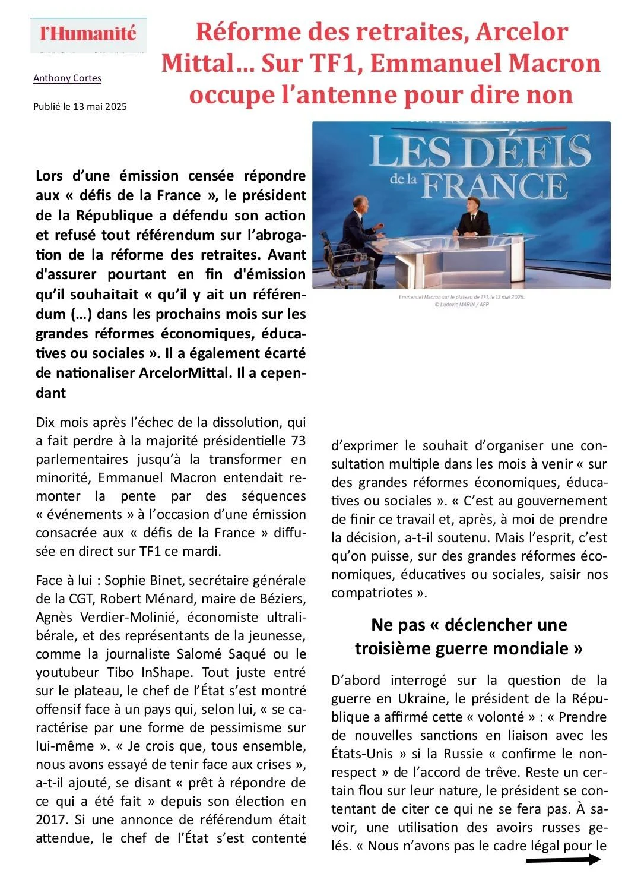
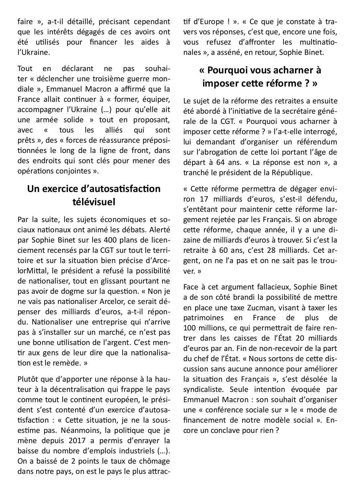

Publication d’archives
Réforme des retraites, Arcelor
Date indiquée par Facebook · 14 mai 2025
Texte conservé avec la publication
Contexte du dossier
Après l’intervention télévisée d’Emmanuel Macron, un relais de mai 2025 rapproche son refus de revenir sur les retraites et la situation d’ArcelorMittal. Le 5 juin, la page salue le vote majoritaire d’une résolution en faveur de l’abrogation, pendant la niche parlementaire communiste, et maintient l’exigence d’un référendum. La distinction est décisive : cette publication ne constate pas l’abrogation de la réforme. Elle rend compte d’un appui politique obtenu à l’Assemblée et d’une bataille qui se poursuit hors de l’hémicycle.


Sources
Archive rouge · export Facebook · AR-0002-FB-01122
À lire aussi · Les boulangers et fleuristes « empêchés » de travailler le 1er mai ou comment se faire rouler dans la farine